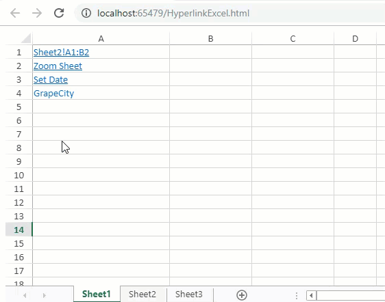

SpreadJS allows users to add hyperlinks in cells to link to any relevant information on a web page, any range in the workbook or to send an email. The setHyperlink method can be used to set the following types of hyperlinks in the cells:
Users can also automatically generate a hyperlink by entering a link like string value and setting the allowAutoCreateHyperlink property to true.

This example code adds different hyperlinks to the cells of a spreadsheet.
| JavaScript |
Copy Code
|
|---|---|
// get the activesheet var activeSheet = spread.getSheet(0); // Hyperlink to URL with Tooltip and link without underline activeSheet.setValue(0, 0, 'GrapeCity'); activeSheet.setHyperlink(0, 0, { url: 'https://www.grapecity.com/spreadjs', tooltip: "GrapeCity Website", linkColor: '#0066cc', visitedLinkColor: '#3399ff', drawUnderline: false }); // Hyperlink to Sheet Location activeSheet.setValue(1, 0, 'Sheet2!A1:B2'); activeSheet.setHyperlink(1, 0, { url: 'sjs://Sheet2!A1:B2', tooltip: "Link to Sheet2!A1:B2" }, GC.Spread.Sheets.SheetArea.viewport); // Hyperlink to Email Address activeSheet.setValue(2, 0, 'Send email'); activeSheet.setHyperlink(2, 0, { url: 'spread.sales@grapecity.com', tooltip: "Send email to spread.sales@grapecity.com" }); // Hyperlink to Email Address & Subject activeSheet.setValue(3, 0, 'Send Email With Subject'); activeSheet.setHyperlink(3, 0, { url: 'spread.sales@grapecity.com?subject=Purchase Of License', tooltip: "Send email to spread.sales@grapecity.com with Subject" }); // Hyperlink to Custom Command - Zoom Sheet activeSheet.setValue(4, 0, 'Zoom Sheet'); activeSheet.setHyperlink(4, 0, { command: function (activeSheet) { if (activeSheet.zoom() === 1) { activeSheet.zoom(1.3); } else { activeSheet.zoom(1); } } }); // Set Date Hyperlink activeSheet.setValue(5, 0, 'Set Date'); activeSheet.setHyperlink(5, 0, { command: 'openMonthPicker' }); // Hyperlink Formula activeSheet.setValue(6, 1, "www.google.com") activeSheet.setValue(6, 2, "Google") activeSheet.setFormula(6, 0, "=HYPERLINK(B7, C7"); |
|